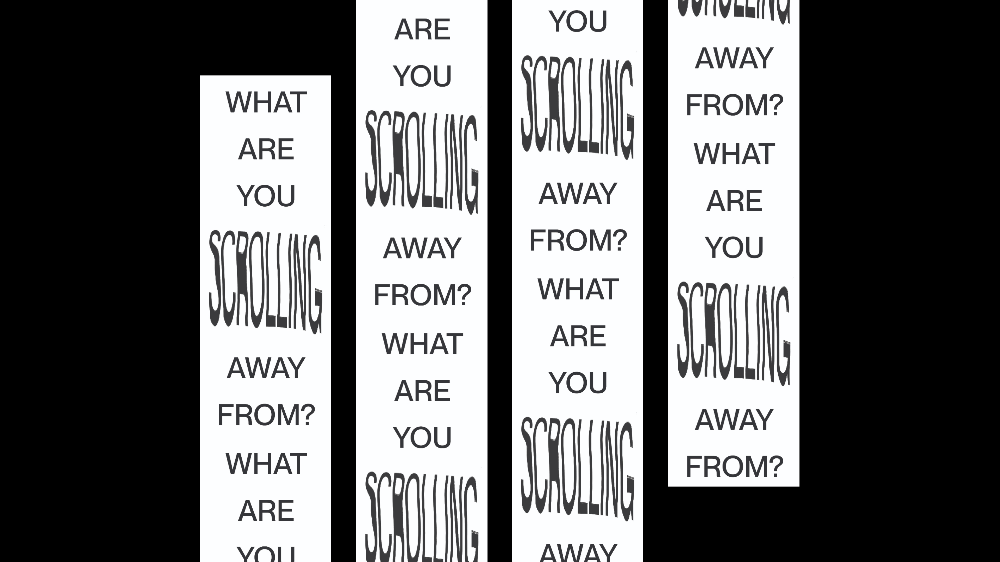
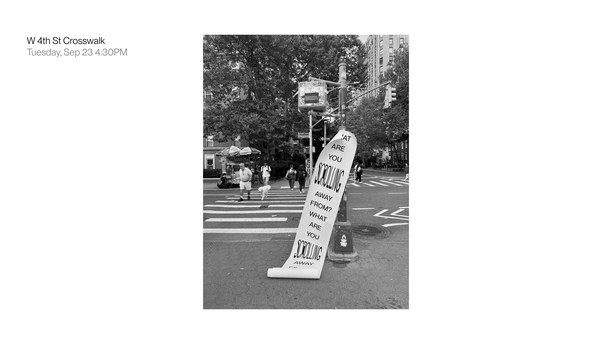
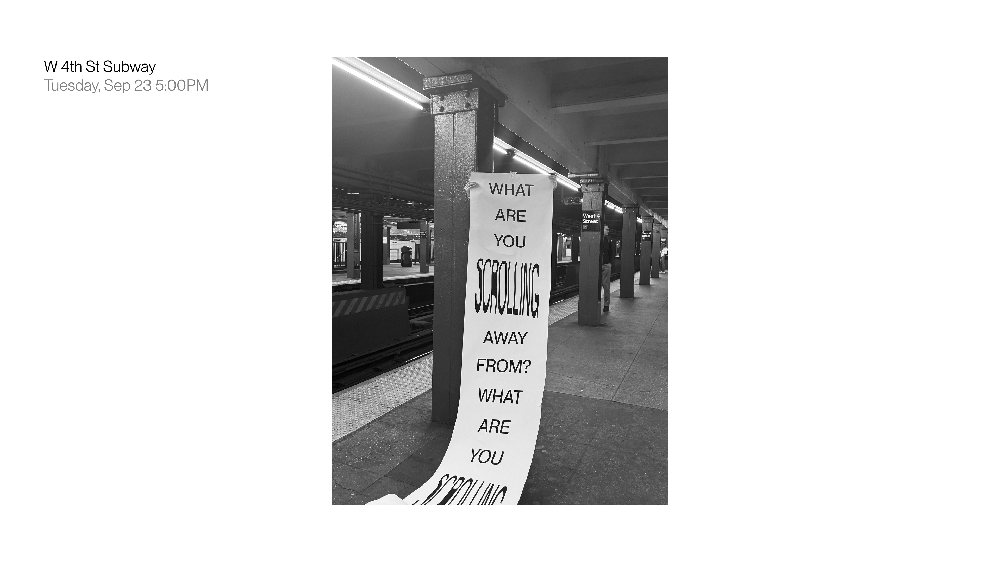
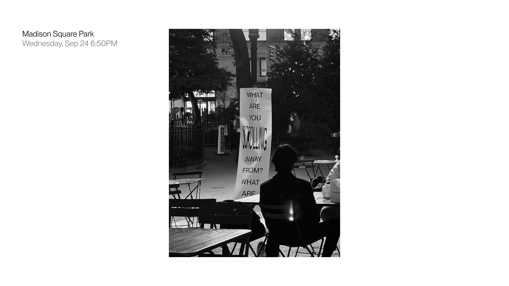

Installation
What Are You Scrolling Away From?

Printed matter
20 x 440 in
20 x 440 in
The installation poses a question about digital habits—how scrolling, swiping, and compressing information shape memory, attention, and culture.
It asks passersby to reflect on their digital behaviors.
I chose large-scale, bold sans-serif letters for visibility and clarity. The text was oversized enough to demand attention, competing directly with a phone screen. I repeated the question on a long paper roll that echoes the endless stream of content we consume through scrolling.
I chose large-scale, bold sans-serif letters for visibility and clarity. The text was oversized enough to demand attention, competing directly with a phone screen. I repeated the question on a long paper roll that echoes the endless stream of content we consume through scrolling.





